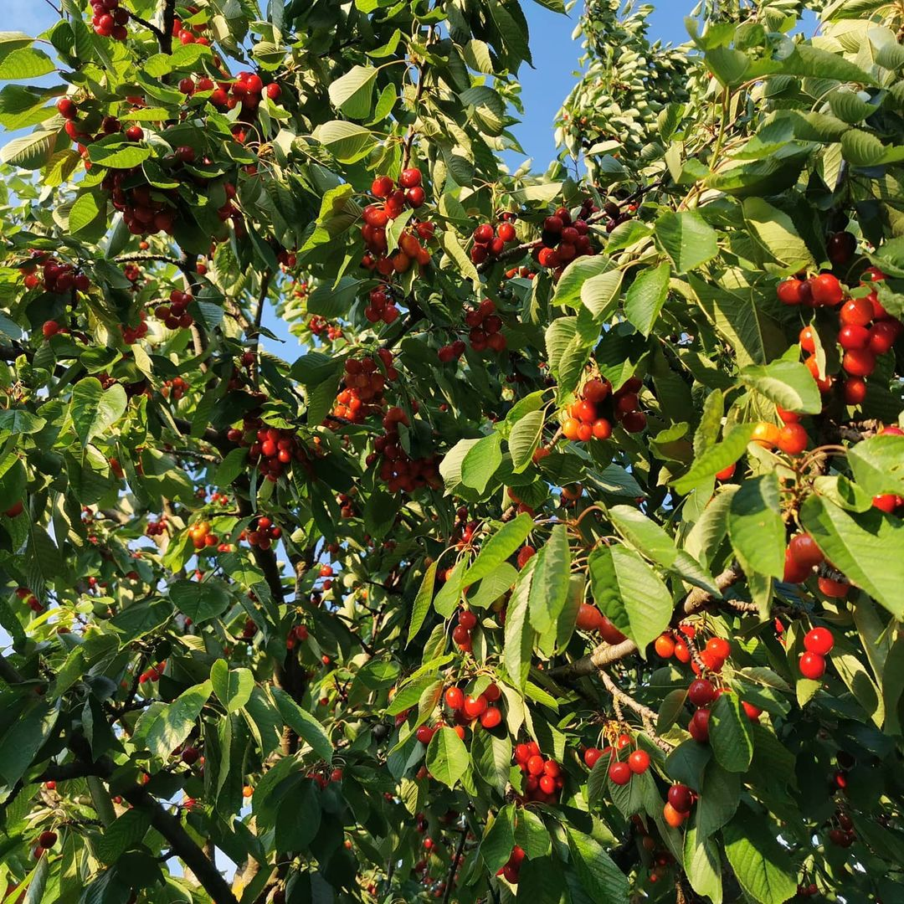

Čerešňová bublanina — Normy Jedál
Včielky 🐝🐝🐝 si svoju prácu odviedli na 1⭐. Máme čerešní🍒🍒 a čerešní🍒🍒.. A stále oberáme, zavárame, mrazíme, varíme džem i syrup a stále je ich tam dosť na napchávanie.... 🍒🍒🍒... .a už aj čerešňová bublanina bola... 👌.. Prosto čerešňová sezóna je top.... 🍒🍒🍒 #srdcovačerešňa #ceresna #zavaranie #ceresnovabublanina #zahradajeterapia #zahradajeradost #zozahradyrovnodokuchyne #monikadrab